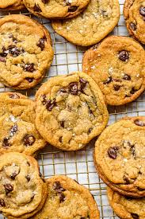

Chocolate Chips cookies

Ingredients
- 1 cup (225g) unsalted butter, softened
- 1 cup (200g) white sugar
- 1 cup (220g) brown sugar
- 2 large eggs
- 2 teaspoons vanilla extract
- 3 cups (375g) all-purpose flour
- 1 teaspoon baking soda
- 1/2 teaspoon baking powder
- 1/2 teaspoon salt
- 2 cups (340g) semisweet chocolate chips
Steps
- Preheat the oven to 180°C (350°F). Line a baking sheet with parchment paper.
- In a large bowl, cream together the softened butter, white sugar, and brown sugar until smooth.
- Beat in the eggs one at a time, then stir in the vanilla extract.
- In another bowl, combine flour, baking soda, baking powder, and salt.
- Gradually mix the dry ingredients into the wet ingredients.
- Fold in the chocolate chips.
- Drop rounded spoonfuls of dough onto the prepared baking sheets.
- Bake for 10–12 minutes, or until edges are golden brown.
- Cool on wire racks and enjoy.
Video Guide
← Back to Recipes